-
预警信息
>>山洪信息
长汀镇， 12月20日9时1分达到准备转移级别预警，正在处理目前是已内部告警状态。其中，西沟屯3小时累计降雨45.3mm，超准备转移0.3mm横道镇， 12月20日9时1分达到立即转移级别预警，未处理目前是新产生状态。其中，柳树村3小时累计降雨62.2mm，超准备转移17.2mm。>>雨情信息
2015-12-19 08:00 至 当前时间：有28个降水站报数据，海林县平均降雨7.1mm,最大降雨64.7mm。>>水情信息
2015-12-19 08:00 至 当前时间：有7个河道站报数据，其中0个站点的最新水位超警戒。有3个水库站报数据，其中2个站点的最新水位超汛限。今日降雨分布图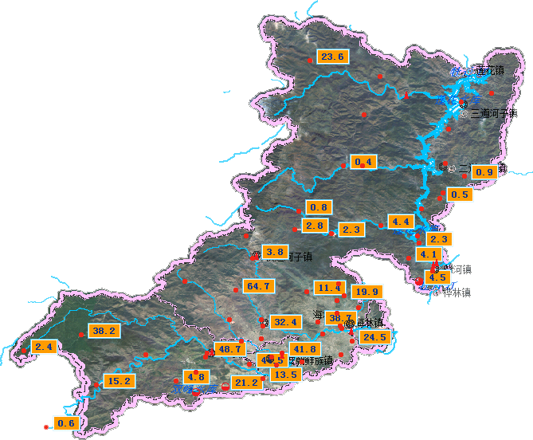
2015-12-19 08:00 至 2015-12-20 09:00，有7个站点报数据，全政区范围内有0个站点的最新水位超警戒，最高水位达到276.32m。所属政区 站名 日期 水位(m) 超警戒(m) 警戒水位 长汀镇 长汀子(水文) 2015/12/20 9:00 94.8 -1.7 96.5 柴河镇 柴河镇 2015/12/20 8:06 214.66 -7.34 222 横道镇 横道河子(水文) 2015/12/20 10:00 98.05 -0.3 98.35 柴河镇 柴河镇(水文) 2015/12/20 8:00 90.31 -1.69 92 三道镇 荒沟(水文) 2015/12/20 10:00 90.56 -1.74 92.3
2015-12-19 08:00 至 2015-12-20 09:00，有3个站点报数据，全政区范围内有2个站点的最新水位超汛限，最高水位达到430.29m所属政区 站名 日期 水位(m) 超汛期(m) 警戒水位 长汀镇 双峰水库 2015/12/20 6:00 430.29 0.14 430.15 柴河镇 长石水库 2015/12/20 6:00 263.29 -1.31 264.6 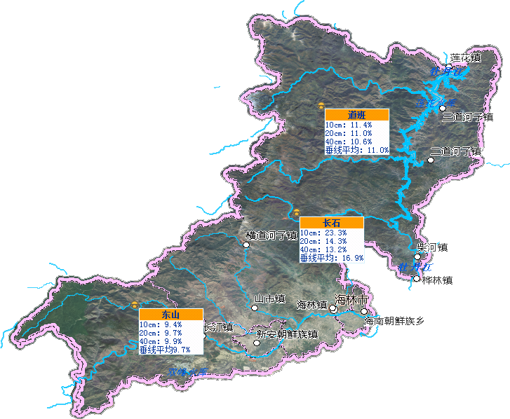 -
水利工程
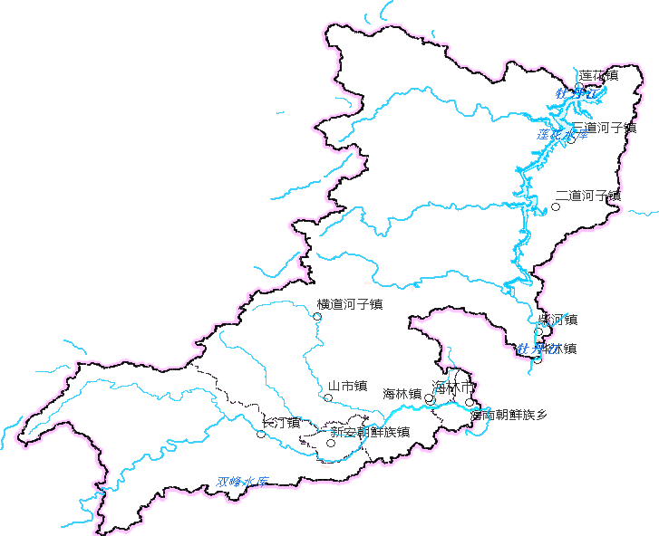 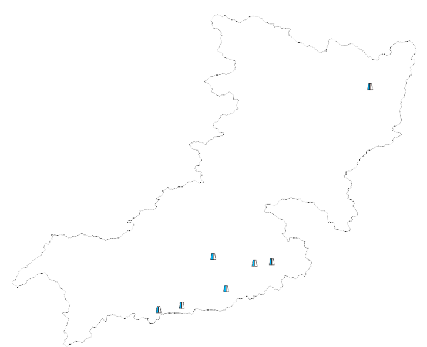 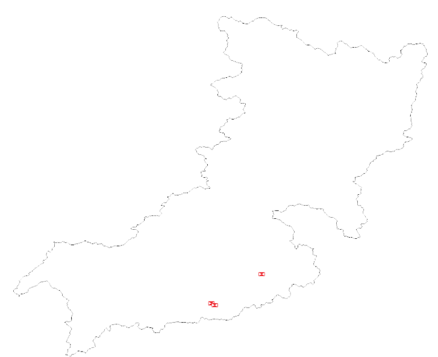 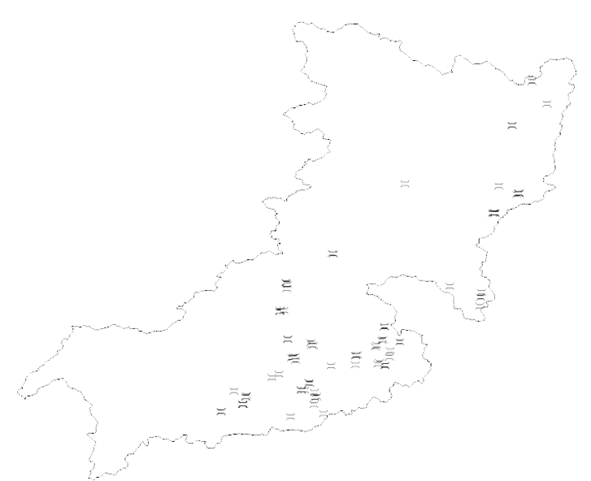 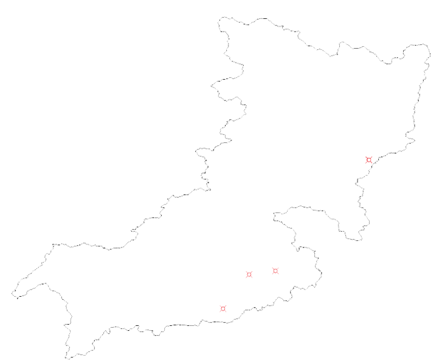
11月19日08时至今，海林县平均降水量为6.7毫米，较历史同期偏少2.0毫米(偏少4%），与近5年同期相比降水量排第四位，少于2011年、2012年和2013年。11月19日08时至今，河道来水量较常年平均偏少全县库塘蓄水1.2亿方，比多年同期少蓄0.3亿方。11月20日至当前时间连续无雨日统计政区(雨量站数) 最大连续无雨日 最近连续无雨日 海林县(67) 20 0 海林镇(14) 20 0 长汀镇(16) 20 0 横道镇(5) 20 0 山市镇(5) 20 0 柴河镇(10) 20 0 新安镇(3) 20 0 二道镇(7) 20 0 三道镇(7) 20 0 >>抗旱服务队基本信息
抗旱服务队名称：海林市抗旱服务队
队员总数： 10 人
仓储面积： 120 平方米
>>现有主要抗旱设备
打井设备： 0 台
移动灌溉设备： 60 台套
>>抗旱能力
浇地能力： 100 亩/天
>>近5年来抗旱效益
打井： 35 眼
建设小型工程： 8 处
清淤渠道： 25 公里
>>现有抗旱物资
850立方大功率水泵：10 台(套)
32立方深井潜水泵：45 台
15KW变频控制柜：37 台
3×6 mm²防水橡套电缆（每盘86米长）：36 盘
50立方深井潜水泵：27 台
18.5KW变频控制柜：28 台
200立方柴动直联泵：30 台(套)
400立方柴动直联泵：20 台(套)
钻深100米打井机：10 台
钻深300米打井机：5 台(套)
洗井空压机组：6 台(套)
50KW柴油发电机组：35 台
5KVA汽油发电机：110 台
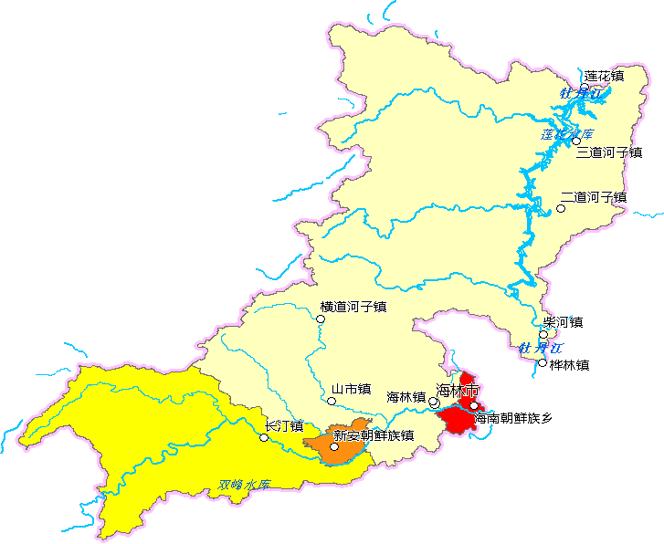 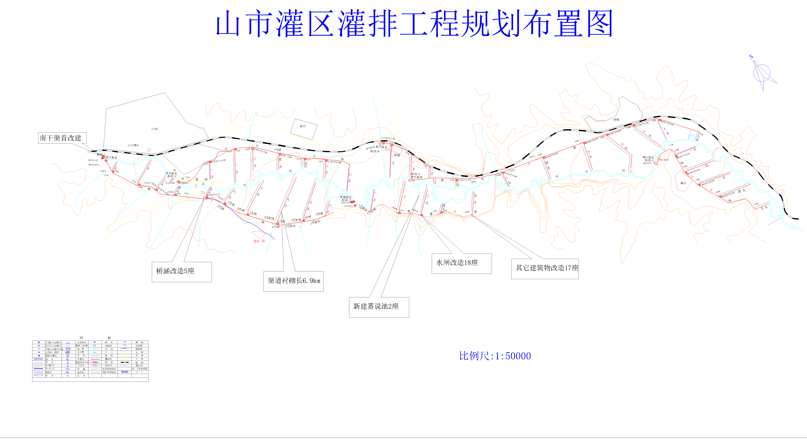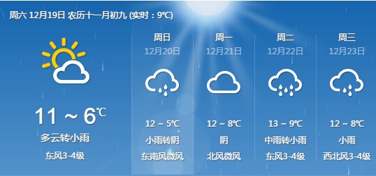
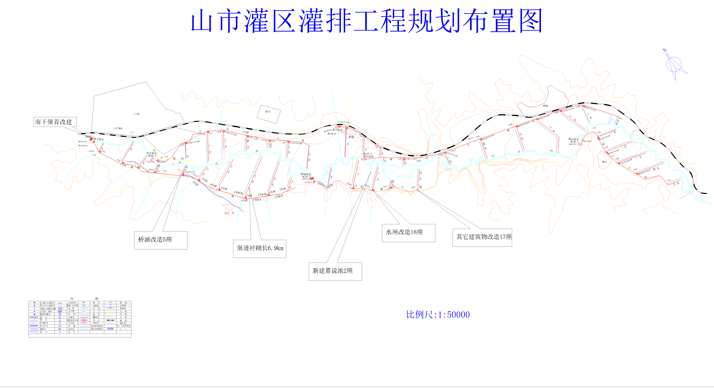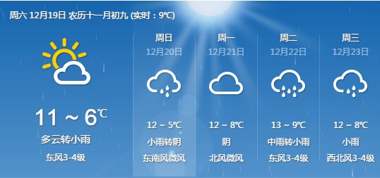一、重要天气
1. 冷空气影响北方地区气
12日至14日，冷空气将自西向东影响新疆东部、西北地区中东部、华北、东北等地，上述地区将有一次大风降温和雨雪天气过程，新疆东部、内蒙古中西部、西北地区中东部、华北西部等地将陆续出现4～6℃的降温，局地降温幅度超过8℃。新疆东部、西北地区东部、内蒙古中西部、华北北部等地将有4～6级风。同时，新疆东部、西北地区大部、内蒙古大部、华北、东北地区等地将有小到中雪，局地大雪。11-15日，受东移冷空气影响，中东部地区将出现一次大范围雨雪和大风降温天气过程，新疆北部、西北地区东部、华北北部、东北地区等地有中到大雪，新疆北部局地暴雪或大暴雪；西南地区东部部分地区有雨转雪，部分地区有中到大雪。中东部地区将出现4-6级偏北风，大部地区气温下降4-8℃。18-20日，黄淮以南大部地区还将有小到中雨天气过程。三、重点关注
设备运行状态
最新监测结果显示，海林市有7个站点出现异常监测信息，其它站点未报异常信息并且报数据也正常；其中山市镇2个站点，三道镇1个站点，二道镇3个站点，山市镇2个站点。行政区划 测站编码 测站名称 监测时间 故障描述 柴河镇 11104530 柴河镇 漏报 新安镇 11104375 共济村 漏报 海林镇 11104440 铁路西大桥 2015-12-20 08:08:40 迟报 海林镇 11104475 新民四队 2015-12-20 08:55:36 海林镇 11104490 平和村 2015-12-20 08:08:40 海林镇 11122552 永丰村 2015-12-20 08:08:40 海林镇 11136370 新民二队（六要素） 2015-12-20 08:08:40 海林镇 11136375 东德家村（四要素） 2015-12-20 08:08:40 海林镇 11136380 二水厂（四要素） 2015-12-20 08:08:40 海林镇 11136385 泡子村 2015-12-20 08:08:40